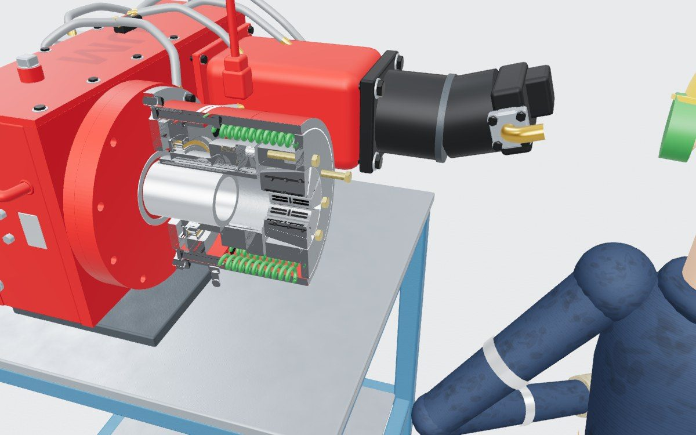
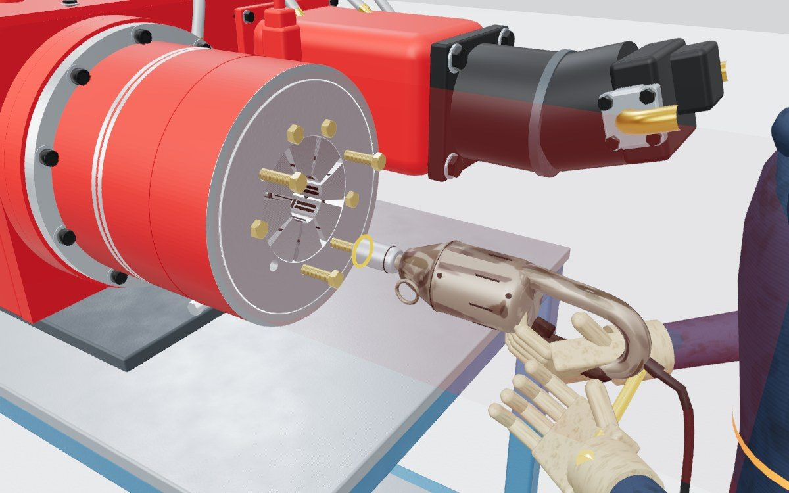
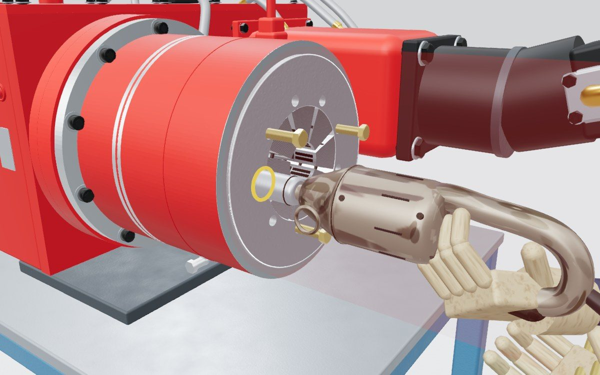
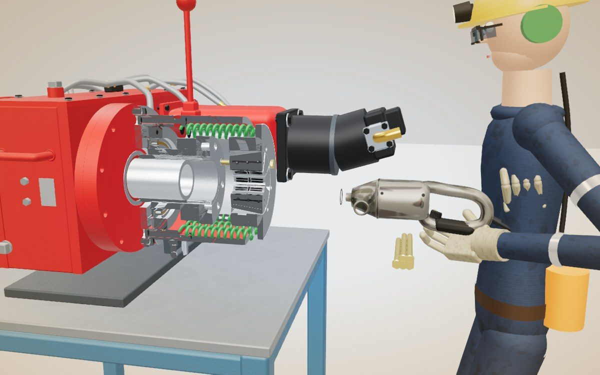
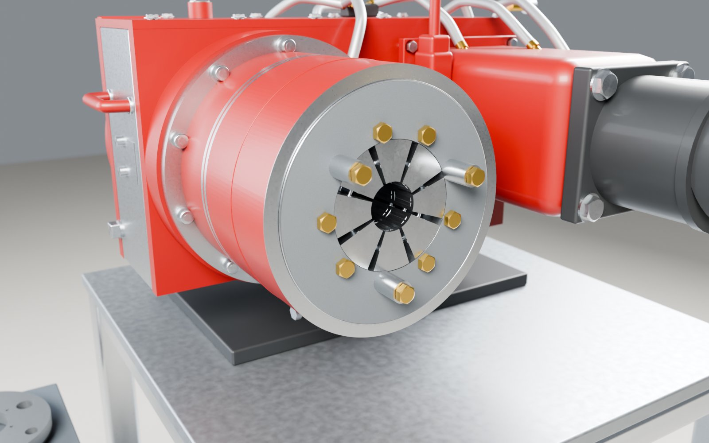
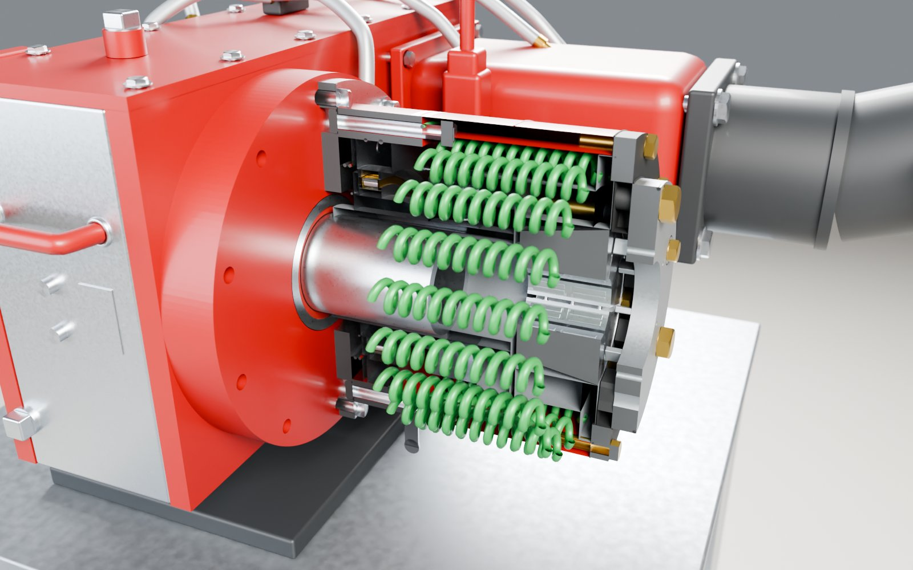

Accident au démontage du cône d'un mandrin
Pendant le démontage du mandrin (chuck) d'une tête de forage, les boulons du cône (bowl) ont été retirés un par un. Le dernier boulon, desserré à l’impact drill, a cassé : l’outil a été projeté et a frappé le travailleur au thorax. Le cône est parti vers le travailleur ; les 3 boulons longs l'ont arrêté.
Plein écran. Espace ou → pour avancer, Échap pour quitter.
ressorts (springs) comprimés derrière le cône (bowl) du mandrin
- Manettes fermées : toujours chargés
- Couvercle retiré : toujours chargés
- Cône boulonné : toute la force sur les boulons
01 · Reconstitution
Ce qui s'est passé
Le travailleur a démonté le chuck, car un anneau de jaws était pris dans les ressorts. Il n’a pas suivi la séquence de démontage, mais a plutôt dévissé chaque boulon complètement, un par un.
Le dernier boulon ne voulait pas se défaire. Il a utilisé l’impact drill pour desserrer le dernier boulon. Après plusieurs essais, le boulon a cassé et l’impact drill a été projeté vers lui.
L’outil l’a frappé au thorax et il est tombé au sol. Après avoir repris son souffle, il a constaté que sa main droite était enflée.
-

6✓ Étape 6 respectée
Les 3 boulons longs sont remis sans bushing
Étape 6, avant de toucher aux boulons du cône :- enlever les 3 boulons longs (½ × 8 po) et leurs bushings (1 ½ po) ;
- revisser les boulons longs sans bushing.
Sans bushing, ils vissent 1 ½ po plus loin : assez de filets en prise pour arrêter le cône s'il part.
-

7✗ Étape 7 non respectée
Boulons retirés un par un
Chaque boulon du cône est sorti au complet, un après l'autre.
Étape 7, ce qu'il fallait faire :- dévisser chaque boulon du cône d'1 tour seulement, dans l'ordre 1 à 6 ;
- refaire le tour de l'ordre 1 à 6 jusqu'à ce que les ressorts soient détendus.
Les 6 boulons partagent la charge pendant toute la détente.
-

!✗ Impact drill sous pleine charge
Le dernier boulon porte tout
Le dernier boulon retient seul la poussée des 18 ressorts. Il ne veut pas se défaire : le travailleur le desserre à l’impact drill, plusieurs essais.
-

✗ Travailleur frappé au thorax
Le boulon casse, l’outil est projeté
L’impact drill est projeté vers le travailleur et le frappe au thorax. Le cône part vers le travailleur : les 3 boulons longs l'arrêtent.
Sans l'étape 6 (les 3 boulons longs remis sans bushing), le cône et les mâchoires auraient été projetés vers les mains et le corps du travailleur.


02 · L'énergie résiduelle
Le danger caché
Les 18 ressorts (springs) du mandrin poussent le cône en permanence pour fermer les mâchoires (jaws). De l'extérieur, rien ne le montre : tant que le cône est boulonné, toute leur force repose sur les boulons.
- L'hydraulique coupée, les ressorts restent chargésFermer les manettes coupe l'hydraulique, pas l'énergie des ressorts.
- Les boulons retiennent toutChaque boulon retiré au complet reporte la charge sur ceux qui restent, jusqu'au dernier.
- Étape 6 avant l'étape 7Étape 6 : remettre les 3 boulons longs sans bushing. Étape 7 : ensuite seulement, dévisser les boulons du cône 1 tour à la fois, dans l'ordre 1 à 6.